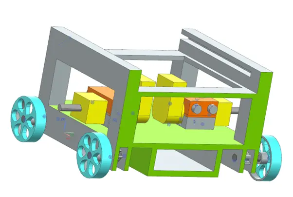
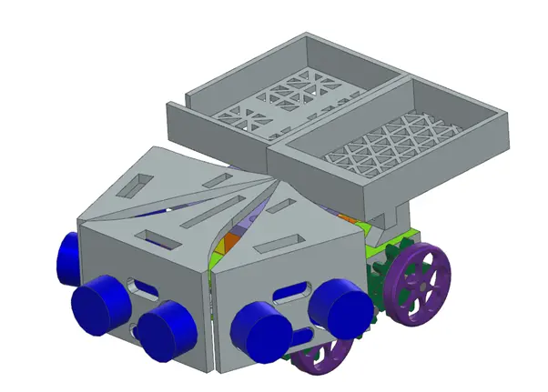
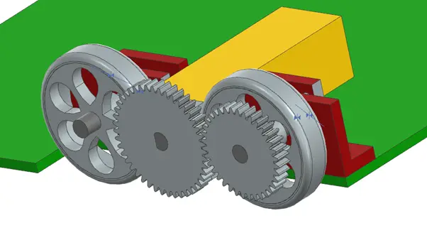
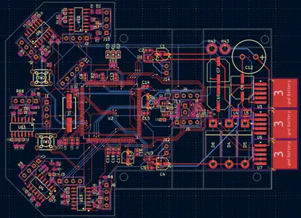
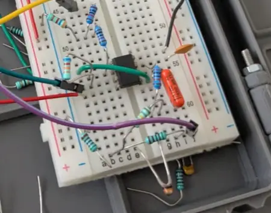
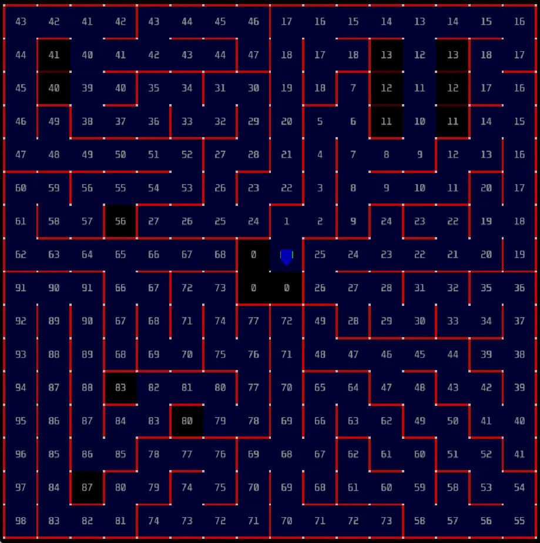

← All projects
University
Micromouse maze robot
An autonomous maze-solving robot on an STM32H743. I wrote the firmware by hand in C/C++.
The project
Micromouse is the classic robotics contest: a small robot must explore an unknown 16 × 16 maze, find the centre and then race there on the shortest path. Our team designed the mechanics, sensors and PCB; I wrote the firmware.
The robot runs on an STM32H743 (480 MHz Cortex-M7) with N20 motors and magnetic encoders, two custom infrared side sensors and three ultrasonic sensors. The code is about 650 lines of my own C/C++ on the STM32 HAL.
Try it
Open the interactive demo
Watch this algorithm explore a random maze, step by step, in your browser.
What I did
- Classic floodfill solver: every cell holds its step distance to the goal; one recomputation updates the whole map when a new wall is seen.
- Dual PID control of speed and heading, on top of a motion core with acceleration profiles.
- Sensor fusion of infrared and ultrasonic readings to detect walls reliably.
- Speed run with smooth diagonal-cut 90° turns and smooth 180° U-turns instead of stop-turn-go.
Under the hood
C/C++ (STM32 HAL)motor control, encoders, PID loops and the maze logic, all on the microcontroller.
Breadth-first floodfilla queue-based distance map, which is optimal in cell steps and runs well under 1 ms.
void Flood() {
std::queue<pii> q;
for (int i = 0; i < MAZE_SIZE; i++)
for (int j = 0; j < MAZE_SIZE; j++) dist[i][j] = 65535;
int goals[4][2] = {{7,7},{7,8},{8,7},{8,8}};
for (int i = 0; i < 4; i++) {
int x = goals[i][0], y = goals[i][1];
dist[x][y] = 0;
q.push({x, y});
}
while (!q.empty()) {
auto [x, y] = q.front(); q.pop();
for (int d = 0; d < 4; d++) {
int nx = x + dx[d], ny = y + dy[d];
if (nx < 0 || nx >= MAZE_SIZE || ny < 0 || ny >= MAZE_SIZE) continue;
if (wall[x][y][d] == 1) continue; // known wall
if (dist[nx][ny] > dist[x][y] + 1) {
dist[nx][ny] = dist[x][y] + 1;
q.push({nx, ny});
}
}
}
}The mouse always moves to the open neighbour with the lowest distance, preferring straight, then sides, then back.
Renders, results and photos




